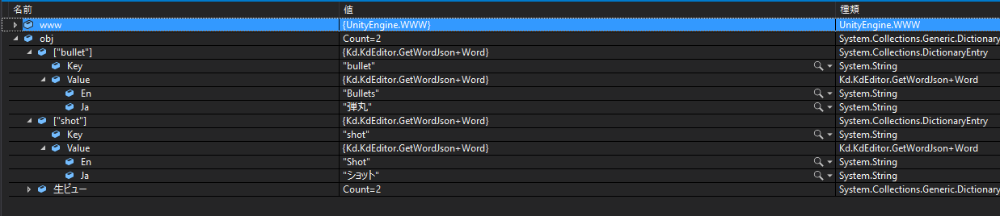

スプレッドシートからjsonデータを読み込む
概要
結構前にスプレッドシートからデータを読み込むの記事でOAuth2の認証をしてスプレッドシートを読む実装をしました。
ですが、こんなことしなくてもスプレッドシート側でGETのリクエストを受け取ってデータをjsonにして返せば大体事が足ります。
今回はビルド前にスプレッドシートからデータを読み込み、保存するエディタ拡張を作ります。
スプレッドシート側の実装
スプレッドシート側は「Google Spreadsheet を簡易 Webサーバーとして動かして、手軽にWebHookを受け取る方法」の記事を参考にして実装します。
今回は翻訳データを例に、以下のようにGETの処理を実装しました。
function doGet(e){
//本当はスプレッドシートからデータを作るけれど、今回は適当にデータを用意
var test = {
bullet : {Ja: "弾丸", En: "Bullets"},
shot: {Ja: "ショット", En: "Shot"}
}
var output = ContentService.createTextOutput(JSON.stringify(test));
output.setMimeType(ContentService.MimeType.JSON);
return output;
}
Unity側でエディタ拡張として実装
以下のようにエディタ拡張として実装します。Editorフォルダを作り、GetWordJson.csとして保存します。
WWWクラスを使用して、レスポンスを受け取ります。
受け取った結果はLitJsonを使用して、クラスに変換します。
このとき、レスポンスはwww.textで受け取れるのですがこれを使用しようとすると、Unsupported encoding: 'UTF-8,text/html'とエンコーディングのエラーが出るのでwww.bytesからUTF8に変換して渡します。
using System.Text;
using UnityEditor;
using UnityEngine;
public class GetWordJson {
public class Word {
public string Ja;
public string En;
}
//メニューのtest に GetWordJsonを追加
[MenuItem("test/GetWordJson")]
public static void Get() {
WWW www = new WWW("https://script.google.com/macros/s/AKfycby-XVXs5qJl1v26Y1xxxxxxxxxxxxxxxxxxxxxxxxVx8inwe/exec");
while (!www.isDone);
if (www.error != null) Debug.LogError(www.error);
else {
var obj = LitJson.JsonMapper.ToObject<Dictionary<string, Word>>(Encoding.UTF8.GetString(www.bytes));
}
}
}
以下のようにobjに翻訳辞書データが入っているのがわかります。

この結果を元にScriptableObjectにしても良いですし、そもそもjsonのまま保存して実行時にパースしても良いです。
jsonのまま保存する場合は以下のようになります。
var path = Application.dataPath + "/Words.json";
StreamWriter writer = new StreamWriter(path);
writer.WriteLine(Encoding.UTF8.GetString(www.bytes));
writer.Close();
AssetDatabase.Refresh();